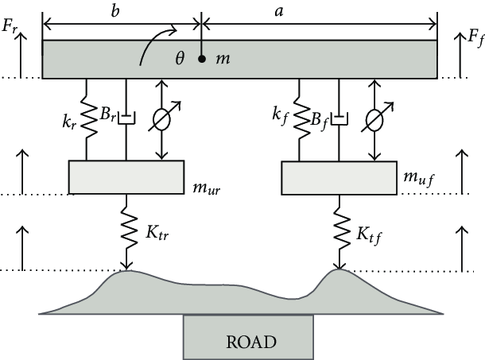
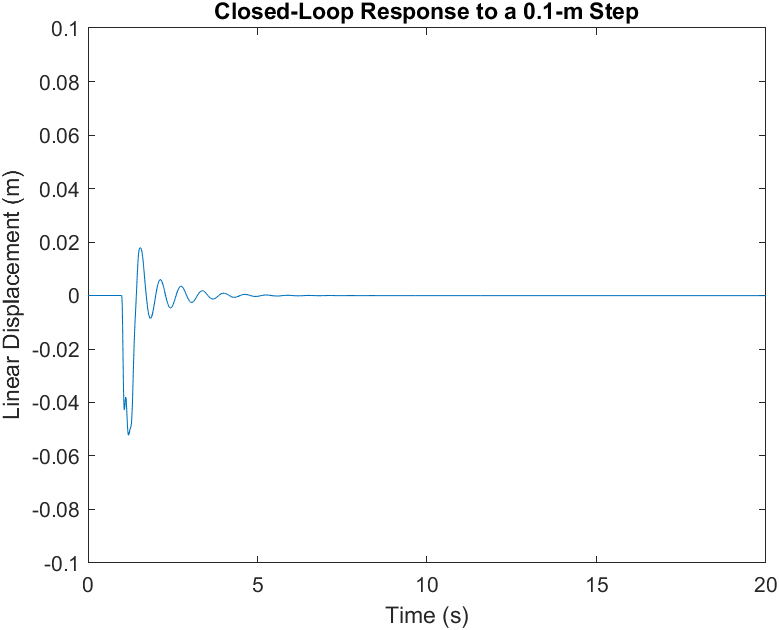

Every good road vehicle should have a sufficient suspension system to grant road holding ability, while still providing comfort when riding over bumps and holes in the road. To practice my system modeling and simulation skills, I chose to develop a vehicle suspension state-space model in MATLAB. With this model I optimized parameters and designed a closed loop, PID controlled suspension system to filter and quickly dissipate large oscillations.
To simplify the project, I approximated the suspension system using a half car model as seen in the diagram above. This model contains two linear moving masses, a linear and rotating mass, four springs, two frictional dampers, and two linear actuators that are used in the closed loop system.
Assuming approximated realistic values for the element parameters including the spring constants, damping coefficients, and masses, I developed an open loop model in MATLAB. With this model, I simulated the displacement response to a ten-centimeter step in the road, the step is first experienced by the front wheel and reaches the second wheel 0.2 seconds later. The distance between the vehicle and the front wheel is plotted below.
This system experiences significant road disturbance and a very large settling time. To reduce this, I utilized a Proportional-Integral-Derivative (PID) control system. Using linear actuators to apply tensile or compressive forces based on feedback is common in modern suspension systems and it can have a substantial impact on reducing overshoot and shortening the settling time. After optimizing the controller by tuning the PID constants, the following closed loop simulation was conducted. This new system greatly improved the effectiveness of the suspension system.
